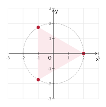

例題 3平面上の曲線と複素数平面 複素数のn乗根（z^n=w）
方程式 \(z^{3}=8\) を解け。
解き方（まず考え方）
\(w=r(\cos\theta+i\sin\theta)\) のとき \(z^n=w\) の解は \(z=r^{1/n}\left\{\cos\dfrac{\theta+2k\pi}{n}+i\sin\dfrac{\theta+2k\pi}{n}\right\}\) \((k=0,\cdots,n-1)\)。解は円周上に等間隔（正 \(n\) 角形）に並ぶ。
コツ\(n\) 個の解は、円周を \(n\) 等分した位置に並ぶ。
解答
STEP 1 右辺を極形式にする
\[8=8\left(\cos0+i\sin0\right)\]
STEP 2 解を極形式で書く
\(z=2(\cos\phi+i\sin\phi)\) とおくと、ド・モアブルより \(z^{3}=8(\cos3\phi+i\sin3\phi)\)。
\[3\phi=0+2k\pi\ \Rightarrow\ \phi=\dfrac{0+2k\pi}{3}\quad(k=0,1,\cdots,2)\]STEP 3 \(k\) に値を代入する
\[k=0:\ z=2\left(\cos0+i\sin0\right)=2\\ k=1:\ z=2\left(\cos\dfrac{2 \pi}{3}+i\sin\dfrac{2 \pi}{3}\right)=-1 + \sqrt{3} i\\ k=2:\ z=2\left(\cos\dfrac{4 \pi}{3}+i\sin\dfrac{4 \pi}{3}\right)=-1 - \sqrt{3} i\]
解は複素数平面上で、原点中心・半径 \(2\) の円に内接する正 \(3\) 角形の頂点。

【答案（テストに書く形）】
\[z=2,\ -1 + \sqrt{3} i,\ -1 - \sqrt{3} i\]答
練習問題 3
- 方程式 \(z^{4}=-4\) を解け。
- 方程式 \(z^{3}=- 8 i\) を解け。
- 方程式 \(z^{4}=16\) を解け。